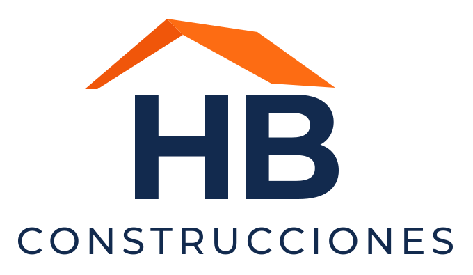
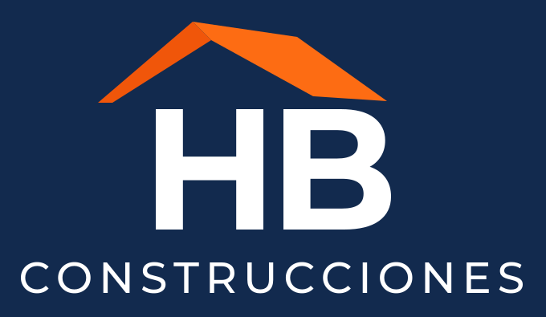
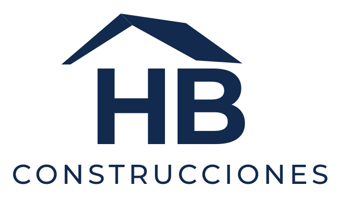
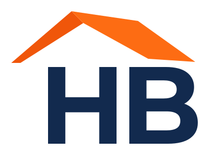

Marca
Logo y kit de versiones (color, negativo, monocromo, icono) en vectorial, listo para web, redes e impresión. También banners y piezas para redes.




/servicios
Me centro en lo que más impacto tiene en un negocio: una web que funcione. Si además necesitas imagen de marca o que alguien la mantenga, también me encargo.
Tu web diseñada y programada a medida: una landing para captar clientes, una web completa para tu empresa o una aplicación con funciones propias. Rápida en el móvil, fácil de encontrar en Google y preparada para que te contacten.
Siempre incluido
Logo y kit de versiones (color, negativo, monocromo, icono) en vectorial, listo para web, redes e impresión. También banners y piezas para redes.




Tu web alojada, con dominio, copias de seguridad, pequeños cambios y alguien que responde si algo falla.
Plan mensual o anual, aparte del proyecto.
#preguntas
Cada proyecto es distinto, así que no trabajo con tarifas cerradas. Cuéntame tu idea y te paso un presupuesto a medida.
Una landing suele estar lista en 1–2 semanas desde que tengo tus textos y fotos. Una web más grande, según el alcance; te lo indico en el presupuesto.
Lo básico: qué haces, a quién y fotos de tu trabajo. Si no tienes textos, te ayudo a escribirlos.
Sí. El dominio y el contenido son tuyos.
Sí: puedes pedírmelos o tener un plan de mantenimiento.
Trabajo en remoto con negocios de toda España. Si estás cerca, también podemos vernos.
Sí, como herramienta para trabajar más rápido. El diseño, las decisiones y la revisión de cada detalle son míos (cómo uso la IA ↓).
¿Tienes otra duda? Escríbeme.
#proceso
Un proceso claro para que sepas en todo momento en qué punto está tu web y qué viene después.
#ia
Trabajo con un método llamado desarrollo guiado por especificaciones: antes de escribir una línea de código, dejo por escrito qué debe hacer la web, cómo y con qué criterios de calidad. Después uso herramientas de IA como Claude Code para programar más rápido, y reviso, pruebo y corrijo cada parte antes de publicarla.
spec.md · Qué debe hacer la web, cómo y con qué criterios de calidad.tasks.md · El trabajo dividido en tareas, en orden y revisables.Claude Code · La IA programa cada tarea siguiendo la especificación.